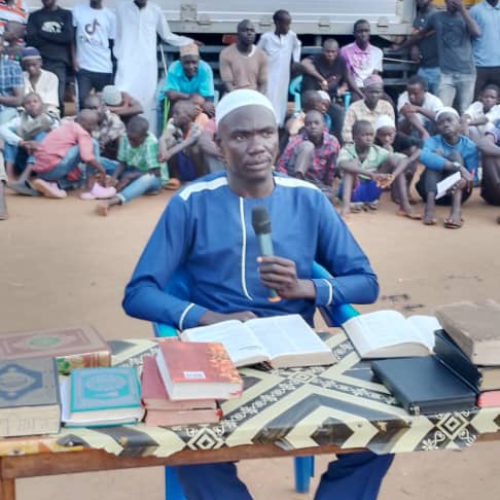
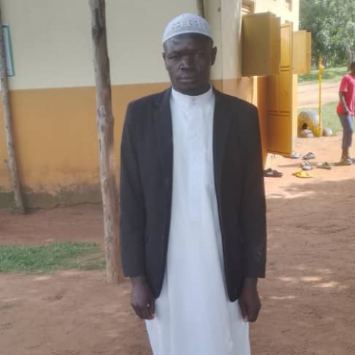
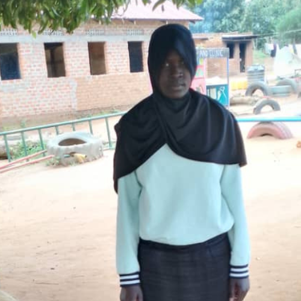

Abubaida Uthuman
Position: ICT manager
Website developer and Graphic designer .

Abdulhanan Abdulrrahman Adnani Haroon
Position: Deputy secrectary Nidau

Surundu Muhamadi Al Kifa
Position: Nidau Teacher of New converts.

Habiba Bint Alli
Position: Nidau Teacher For Quran and yasarina